Noutăți
Sărbătorile de iarnă cu daruri și multe bucurii în IPLT „Alexei Mateevici”🎄
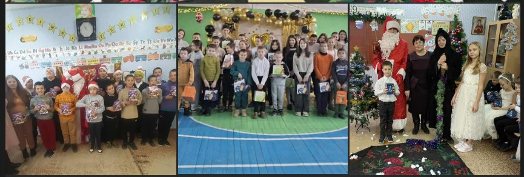
❄️✨🎄🎁Sărbătorile de iarnă cu daruri și multe bucurii în IPLT „Alexei Mateevici” au început din 20 decembrie, marcând debutul unei perioade pline de surprize, emoții frumoase și zâmbete sincere pentru copilașii din instituție. 🎄🎁✨❄️
De atunci, au urmat numeroase activități și daruri, care au adus căldură sufletească și amintiri de neuitat. 😊❄️
Aducem mulțumiri alese APL Căinari pentru sprijinul oferit și pentru cadourile de sărbători, care au adus multă bucurie copiilor din treapta primară. 🤝💝
Recunoștință agenților economici din or. Căinari — Bumbu Anatolie și Lavric Nicolae — împreună cu Şendrea Nadejda, președinte AOPP „SPERANŢA-Căinari”, pentru generozitate și implicare. Datorită acestui efort comun au fost felicitați copiii din familii vulnerabile și copiii cu nevoi speciale, aducându-le bucurie, speranță și zâmbete sincere. 🌟🤍
Mulțumim Olesea Pruteanu, care a facilitat sprijinul unei persoane anonime din diaspora, a cărei bunătate a contribuit la aceste momente speciale. 🌍✨
Vă mulțumim tuturor pentru solidaritate, discreție și inimile mari care transformă sărbătorile în momente pline de magie! 🎅✨
📖✨ Săptămâna Poeziei MOVA ✨📖
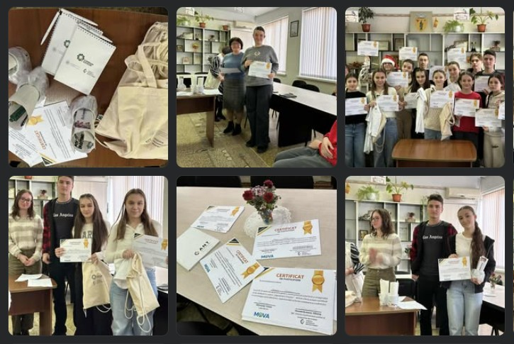
IPLT „Alexei Mateevici”, Căinari, raionul Căușeni
În cadrul Săptămânii Poeziei MOVA, elevii liceului nostru au demonstrat că poezia este o formă vie de expresie artistică și civică, plină de emoție, curaj și creativitate 💫✍️.
🎯 Obiectivul activității:
Promovarea poeziei ca formă de expresie artistică și civică în rândul elevilor de liceu.
📚 Concursul s-a desfășurat pe trei categorii tematice:
❄️ Poezie de sărbători de iarnă
❤️ Poezie de iubire
🌈 Poezie de visuri și aspirații
🙏 Mulțumim organizatorilor Grupului de Inițiativă MOVA, condus de Ohnovan Victor, precum și juriului CM „Limba și Comunicare” pentru implicare și susținere.
👏 Felicitări tuturor participanților pentru curajul de a crea și pentru originalitatea fiecărei poezii prezentate!
💐 Vă dorim inspirație, succese și împliniri literare!
🎁✨ Dar din Dar – bucurii împărtășite ✨🎄
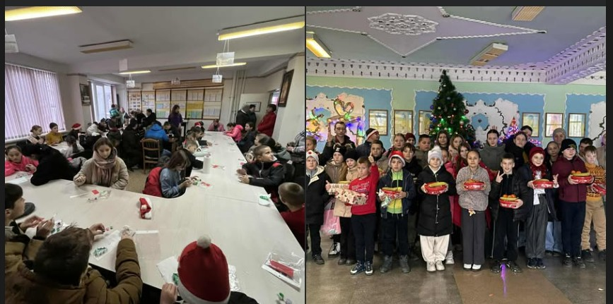
În cadrul campaniei „Dar din Dar”, organizată de InspirO, elevii din LT „Alexei Mateevici” Căinari au primit cadouri dulci – bomboane 🍬, fructe 🍎🍊 – și au pictat câte un brăduț 🎨🎄, luând acasă o amintire plină de culoare.
A fost o activitate încărcată de emoții, zâmbete și speranță 💖, aducând lumină și bucurie copiilor care au nevoie de atenție și căldură sufletească înainte de sărbătorile de iarnă ❄️✨
„Împuternicirea copiilor, părinților, cadrelor didactice și comunităților pentru a promova educația incluzivă în Republica Moldova”
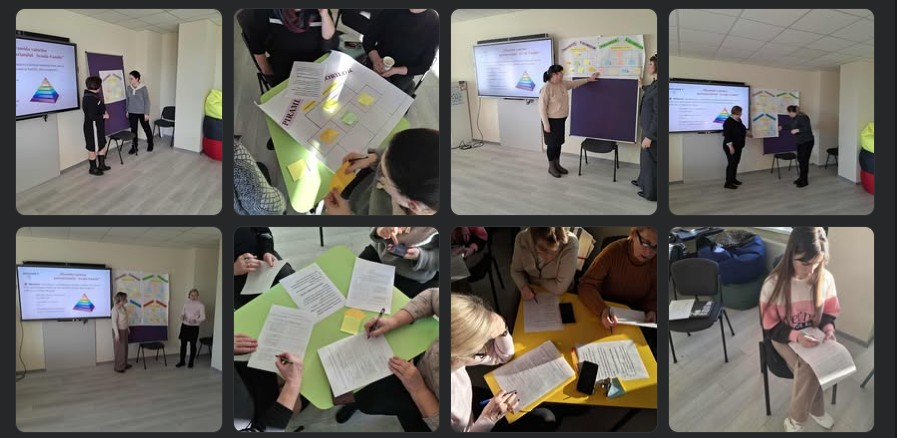
🏫 Liceul Teoretic „Alexei Mateevici” este parte a proiectului „Împuternicirea copiilor, părinților, cadrelor didactice și comunităților pentru a promova educația incluzivă în Republica Moldova”, inițiat de UNICEF și implementat de CCF Moldova, în parteneriat cu Ministerul Educației și Cercetării și Centrul Republican de Asistență Psihopedagogică, în cadrul campaniei naționale „Învățăm împreună”, cu suportul financiar al Guvernul Marii Britanii, pentru perioada iulie 2025 – iunie 2026.
📚 În cadrul proiectului, în instituția noastră au fost organizate trei ateliere de formare pentru cadrele didactice, axate pe:
🔹 educația incluzivă
🔹 andragogie
🔹 parteneriatul școală–familie–comunitate
🔹 comunicarea eficientă între profesori, părinți și alți actori ai microsistemului educațional
🌱 Impactul activităților s-a reflectat în:
✔️ creșterea nivelului de conștientizare și deschidere față de incluziune
✔️ consolidarea competențelor de comunicare ale cadrelor didactice
✔️ întărirea colaborării cu familia și comunitatea
🤗 Atelierele au facilitat schimbul de bune practici, reflecția profesională și asumarea unor abordări educaționale centrate pe copil, contribuind la crearea unui mediu școlar mai sigur, mai empatic și mai incluziv.
💙 Prin aceste rezultate, instituția noastră își reconfirmă angajamentul de a promova educația de calitate pentru toți copiii, bazată pe respect, parteneriat și responsabilitate comună.
,,Ziua Drepturilor Copilului" - 10 decembrie ,,Ziua Drepturilor Omului"
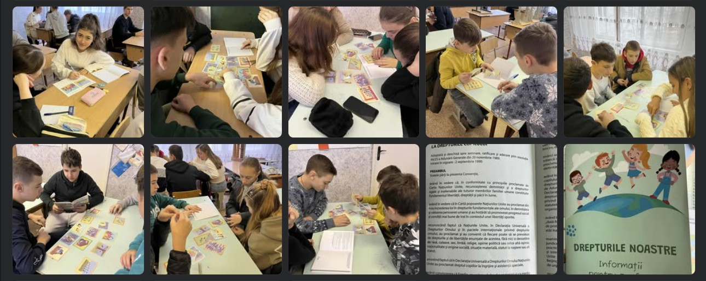
👉În perioada 20 noiembrie ,,Ziua Drepturilor Copilului" - 10 decembrie ,,Ziua Drepturilor Omului" în cadrul IP L.T. „Alexei Mateevici” Căinari s-au desfășurat activități interactive dedicate înțelegerii și promovării Drepturilor Copilului, stipulate în Convenția ONU. Elevii au participat cu interes la discuții, jocuri educative și activități menite să dezvolte spiritul civic, respectul și responsabilitatea.
✨ Cunoașterea drepturilor este primul pas spre a deveni cetățeni responsabili, capabili să se apere pe sine și pe ceilalți!
Succes remarcabil pentru Consiliul Elevilor din L.T. „Alexei Mateevici”, Căinari – UPSHIFT 2025!
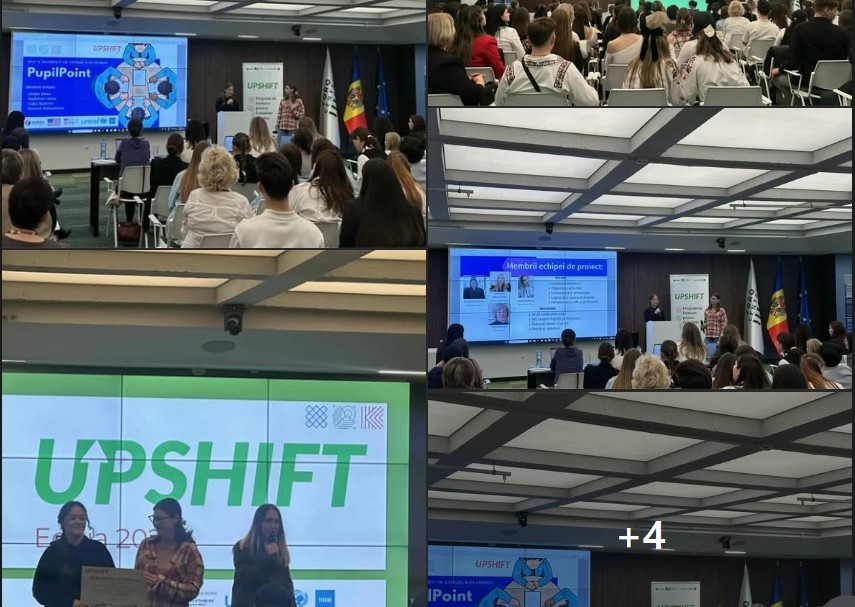
Consiliul Elevilor din cadrul Liceului Teoretic „Alexei Mateevici” din Căinari a obținut un rezultat deosebit prin câștigarea proiectului „PupilPoint” în cadrul programului UPSHIFT 2025, beneficiind de o finanțare în valoare de 30.000 de lei. Această reușită este rodul muncii asidue, al viziunii, ambiției și perseverenței elevilor implicați.
Proiectul „PupilPoint” își propune transformarea unui spațiu existent într-un centru multifuncțional modern și bine dotat, care va oferi elevilor un mediu sigur și prietenos pentru dezvoltare personală, colaborare, inițiativă și implicare activă în viața comunității școlare.
👥 Echipa de proiect:
• Alexa Budiștean
• Beatrice Cujba
• Alexandrina Prutean
👩🏫 Coordonator: Elena Ghilan , director adjunct pentru educație
🤝 Mentor: Clopot Tatiana
Echipa a demonstrat că implicarea, responsabilitatea și perseverența pot transforma o idee într-un succes real, cu impact asupra comunității școlare. Le adresăm sincere felicitări pentru acest rezultat remarcabil și le dorim mult succes în implementarea proiectului! 🌟
Totodată, exprimăm mulțumiri deosebite Administraţiei liceului și APL Căinari pentru sprijinul constant, susținerea și încrederea acordată tinerilor noștri. Acest parteneriat este esențial în promovarea inițiativelor educaționale și comunitare.
Mulțumim, de asemenea, programului UPSHIFT pentru oportunitatea oferită elevilor de a se dezvolta, de a învăța și de a transforma ideile în proiecte câștigătoare. Sprijinul, resursele și încrederea acordate tinerilor fac o diferență reală în comunitățile noastre.
👏 Felicitări, dragi elevi! Suntem mândri de voi!
Acesta este doar începutul!!!
Programul „Investim în Profesori” continuă!
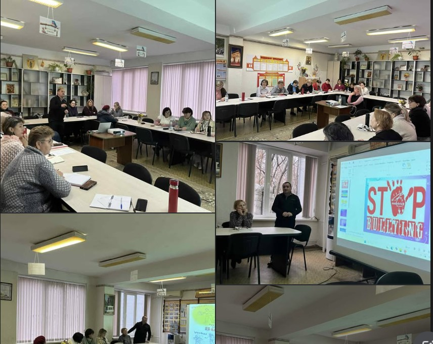
Pe perioada lunilor noiembrie și decembrie 2025, în cadrul IPLT „Alexei Mateevici”, Căinari, r-nul Căușeni, cadrele didactice au participat la activitățile de formare din cadrul programului național „Investim în Profesori” — o inițiativă de amploare dedicată dezvoltării profesionale continue a dascălilor. 👩🏫👨🏫
🎯 Obiectivul principal: îmbunătățirea competențelor profesionale ale cadrelor didactice și creșterea calității educației.
Mulțumim Ministerul Educației și Cercetării al Republicii Moldova și tuturor profesorilor pentru implicare, deschidere și dorința de a evolua continuu! 💙📖
Seminar teoretico-practic raional al profesorilor de Educație Tehnologică
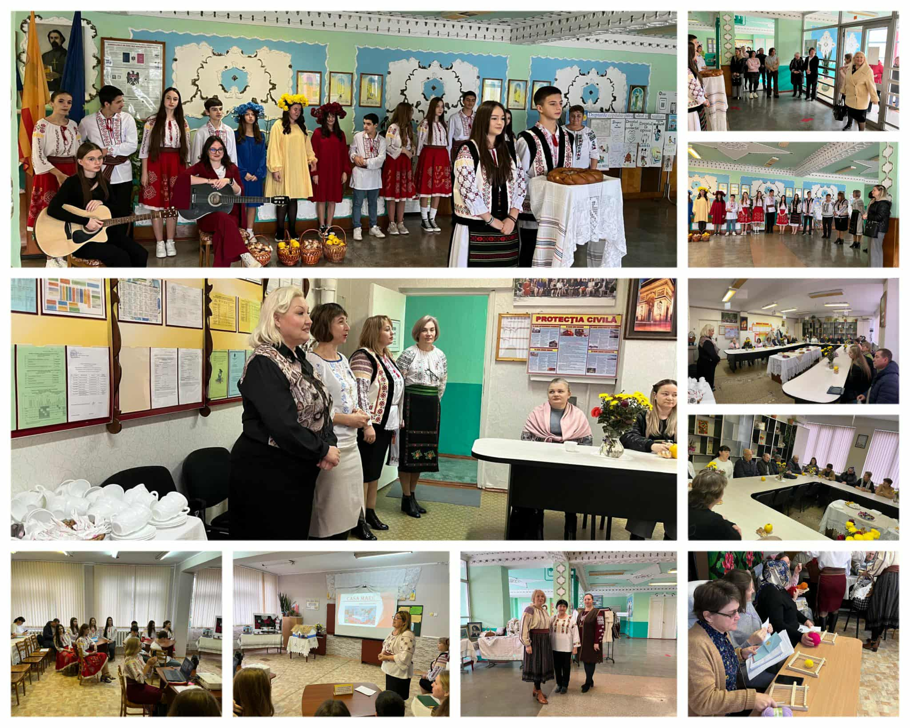
La data de 27 noiembrie 2025, în IP Liceul Teoretic ,,Alexei Mateevici" Căinari, s-a desfășurat seminarul teoretico-practic raional al profesorilor de Educație tehnologică, un eveniment de suflet dedicat valorilor naționale, creativității și colaborării 🤝🎨
🔹 Ora publică – clasa a IX-a, disciplina Educație tehnologică
📚 Lecția–proiect: „Dezvoltarea sensibilității elevilor prin prisma valorilor naționale –,,Casa Mare”
👩🏫 Profesoară: Bumbu Magdalina
🔹 Ora publică – clasa a III-a, disciplina Educație tehnologică
🎨 Tema: Realizarea colajelor și decorațiunilor tematice – ,,Moldova”
👩🏫 Învățătoare: Falenciuc Dina
🤍 Activitățile au fost îmbogățite prin colaborarea cu meșterii populari:
🧵 Sava Feodosia, Ropot Parascovia, Cioban Nadejda, care au susținut un masterclass autentic în cadrul unei frumoase șezători tradiționale 🌾
🎯 Obiectivele seminarului au vizat:
✔️ integrarea elementelor de știință, tehnologie, inginerie, artă și matematică (STEAM) pentru explorarea valorilor naționale;
✔️ exprimarea valorilor prin design, colaj, muzică și activități creative;
✔️ dezvoltarea sensibilității estetice și tehnologice prin valorificarea tradițiilor și meșteșugurilor populare;
✔️ cultivarea identității naționale prin educație și creație❤️
👏 Mulțumim tuturor cadrelor didactice, elevilor și meșterilor populari pentru implicare, dăruire și atmosfera autentică creată!
🏆 Campionatul Național de Jocuri Intelectuale „Sub cușma lui Guguță”, ediția a VIII-a – etapa raională 🎩📚
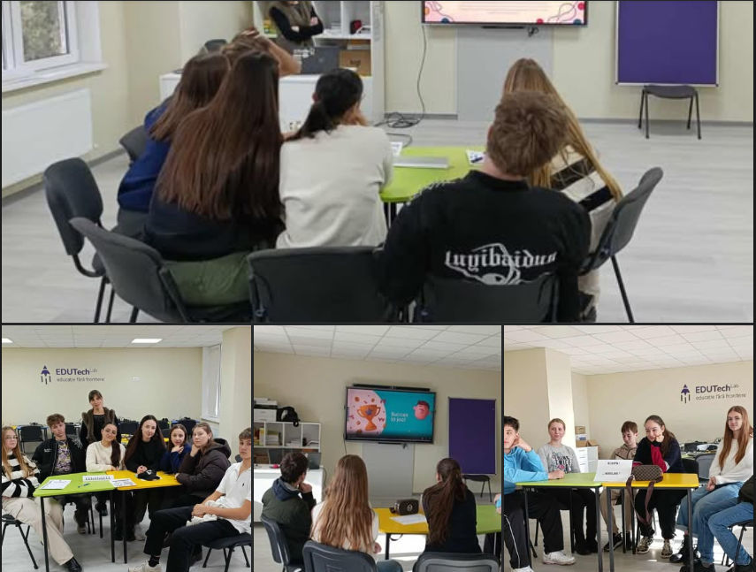
🧠 Cu mult entuziasm și spirit de competiție, elevii din ciclul gimnazial și liceal au participat la etapa raională a Campionatului Național de Jocuri Intelectuale „Sub cușma lui Guguță”.
👏 Echipa liceală „Camarazii” coordonată de profesoara de matematică, Sîrbu Rodica s-a clasat pe Locul II 🥈, iar echipa gimnazială „Mindlink” coordonată de profesoara de matematică, Spinache Elena s-a clasat pe Locul IV – rezultate frumoase care reflectă munca, perseverența și pasiunea pentru cunoaștere! 💡
🎯 Scopul acestui proiect este de a întări, prin joc, dialogul dintre elevi și profesori, dezvoltând cooperarea, gândirea critică și spiritul de echipă în cadrul activităților extracurriculare.
Felicitări tuturor participanților și profesorilor coordonatori!
🌟 Mult succes în continuare! 🍀
Seminar–training „Starea de bine în școală”
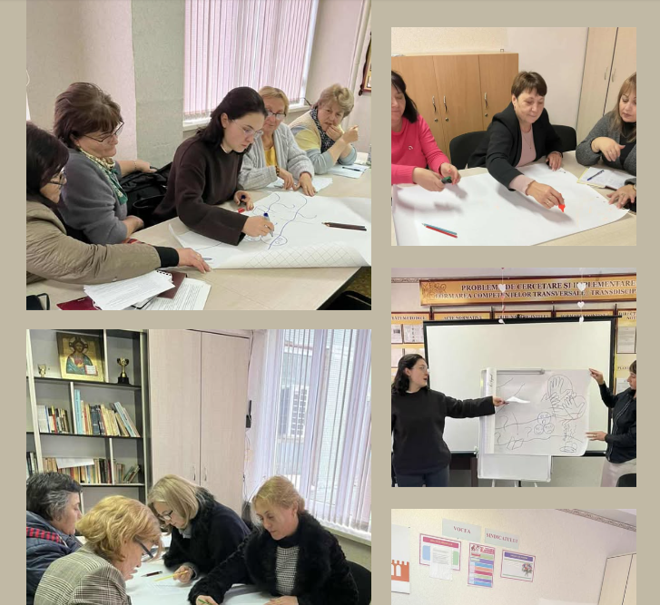
La data de 06.11.2025, cadrele didactice ale IP LT „Alexei Mateevici” Căinari au participat la un seminar-training dedicat creării unui climat pozitiv și echilibrat în școală.
🧠💬 Activitatea a fost una interactivă, cu discuții sincere, exerciții practice și momente de reflecție despre cum putem sprijini elevii, dar și pe noi înșine, pentru a construi o comunitate educațională sănătoasă și motivantă.
🤝 Atmosfera a fost deschisă, energică și plină de idei noi, care vor contribui la îmbunătățirea stării de bine în rândul tuturor membrilor comunității școlare.
🌿 Împreună creștem, învățăm și construim o școală în care fiecare se simte apreciat și înțeles.
Proiect școlar - Compost pentru viitor!
Încă o activitate frumoasă în cadrul proiectelor noastre comunitare!
Proiectul comunitar „Compost pentru viitor: Educație și practici sustenabile pentru comunitățile din sud-estul Moldovei”, prezentat de domnul Andrei Buga, coordonator de proiect, vine cu noi perspective și oportunități pentru elevii și comunitatea noastră. ♻️🌱
Urmează multă informare, implicare, experimentare și, cu siguranță, rezultate pe potriva așteptărilor!
Împreună construim un viitor mai verde! 💚🌍
Mai multe detalii aflați pe pagina noastră de
Facebook
ODD în Acțiune!
Ideile prind viață! ✨
Eleva clasei a XII-a - Treasco Mihaiela a desfășurat o activitate de follow-up intitulată „ODD în Acțiune: Laboratorul de soluții pentru comunitatea noastră”. 🔍🌍
A fost o activitate interactivă, plină de descoperiri noi despre Obiectivele de Dezvoltare Durabilă, idei creative și implicare din partea elevilor! 💡🤝🌱
Felicitări, Mihaela, pentru inițiativă și pentru energia cu care ai inspirat colegii! 🎉👏
Continuăm să construim împreună un viitor mai bun! 🌟🌿
Mai multe detalii aflați pe pagina noastră de
Facebook
La mulți ani dragi dascăli!
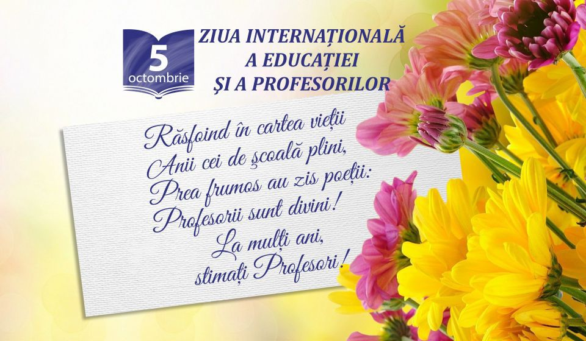
🎓 La mulți ani, dragi dascăli! 🌺
Cu ocazia Zilei profesionale a lucrătorilor din învățământ, vă adresăm cele mai alese cuvinte de recunoștință, admirație și respect!
Mulțumim pentru răbdarea, dăruirea și pasiunea cu care modelați minți, caractere și destine.🫶
Prin munca voastră, aduceți lumină acolo unde este întuneric, încurajați acolo unde există teamă și semănați speranță acolo unde pare că nu mai e.
Vă dorim sănătate, inspirație și împliniri în toate!💫
Să aveți parte de aprecieri sincere, elevi curioși și recunoscători, și de bucuria de a vedea roadele muncii voastre în fiecare zâmbet și succes al copiilor.💐
Jocul valorilor
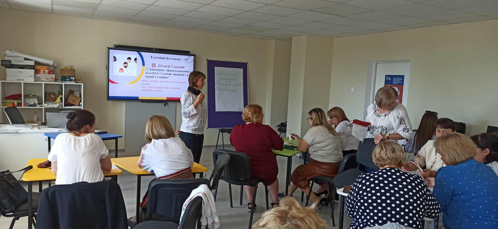
La 18 septembrie, mentorii instituționali Liuba Tim şi Ludmila Rîșcan, au organizat formarea cadrelor didactice cu tema „Educația bazată pe valori”, valorificând Jocul Valorilor ca instrument de dezvoltare a competențelor axiologice.
👉Exercițiul a sprijinit profesorii să recunoască și să analizeze valorile în situații concrete, să reflecteze asupra lor și să practice dialogul și argumentarea în contexte reale.👏
Mai multe detalii aflați pe pagina noastră de
Facebook
Proiectul MOVA în instituția noastră!
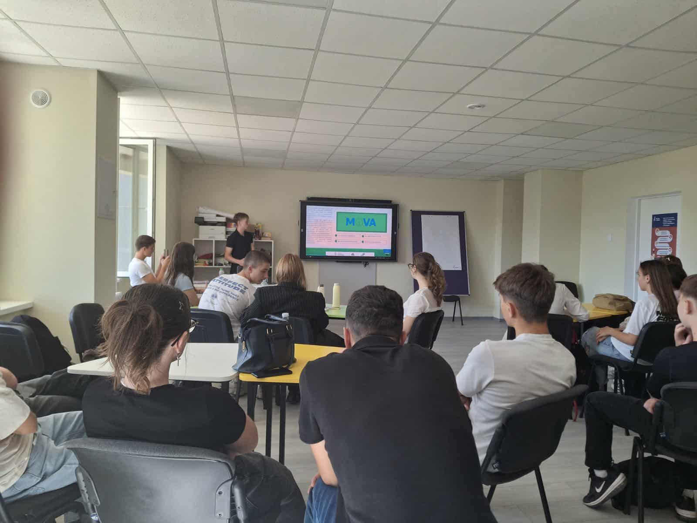
Astăzi a avut loc prima sesiune de formare organizată de ,,GDI MOVA", în cadrul proiectului ,,Budget Eye" , unde un grup de elevi au fost implicați de către fostul elev al instituției Ohnovan Victor - liderul ,,GDI MOVA".
Mai multe detalii aflați pe pagina noastră de
Facebook
Primul sunet 2025!

Stimați elevi, profesori și părinți,
Cu ocazia începutului noului an școlar și a emoționantului Primului Sunet 2025,
Direcția IPLT „Alexei Mateevici” Căinari și colectivul profesoral adresează sincere felicitări
tuturor celor care pășesc astăzi pragul școlii.
Această zi aduce cu sine speranțe, emoții și începuturi frumoase. Pentru elevii claselor I este o
călătorie plină de descoperiri, pentru absolvenți – un pas hotărâtor spre viitor, iar pentru
întreaga comunitate școlară – un prilej de a construi împreună cunoaștere, prietenie și valori
durabile.
Vă dorim tuturor un an școlar rodnic, cu rezultate frumoase, inspirație și reușite pe măsura
așteptărilor!
La mulți ani școlari!
Cu respect,
Direcția și colectivul profesoral al IPLT „Alexei Mateevici” Căinari